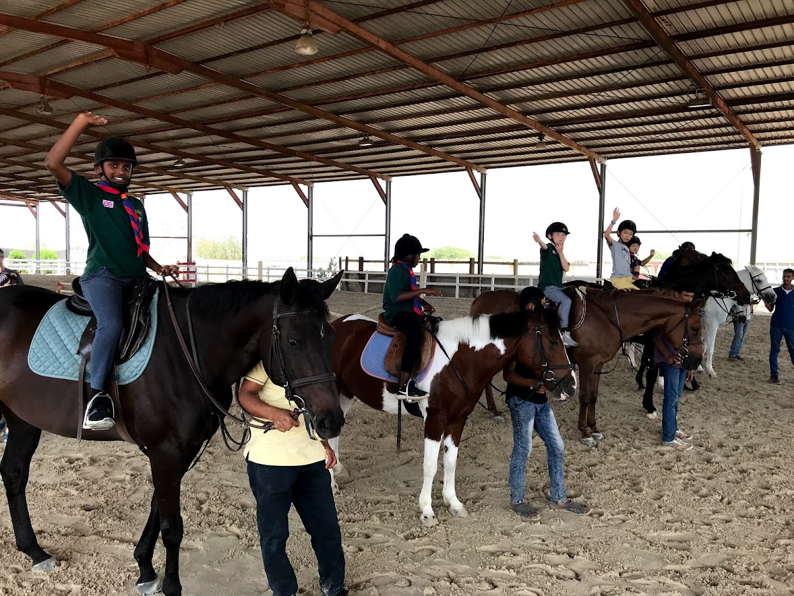

About Us.
The KAUST Cub Scout pack is based at King Abdullah University of Science and Technology in Jeddah, Saudi Arabia. They meet every Monday during term time from 6:30pm until 8:00pm in the Gardens Elementary School Gym. Pupils in grade 3 to 5 are eligible to be members.
Each meeting is different but always include a parade when the night's activities will be advised, a physical activity such as Four Goals Football, with four goals and two balls and six teams. During the meetings the cubs undertake a wide range of activities from building a campfire and learning to cook a chicken stew to the very unusual favourite pan fried cookies. Past activities have also included building rocket launchers,
Cubs are organised into packs of six which is a smaller group of cubs with each six having asixer who is the leader and a seconder who assists him/her. Cubs generally stay within the same pack and in their third year become a sixer or secounder for their pack so they can share the knowledge that they have learnt in previous years with younger or less experienced members of the pack.They can be responsible for taking charge of a game or activities or organising their six during camp.
Cubs work towards badges over the three years such as Know Your Knots, Artist, Athletics, Communicator, Entertainer, Home Help, Pioneer, Scientist. As well as working towards badges with the pack cub scouts can also also choose to work at home on individual badges in subjects that interest them, with 55 subjects to choose from there is something to interest everyone.
